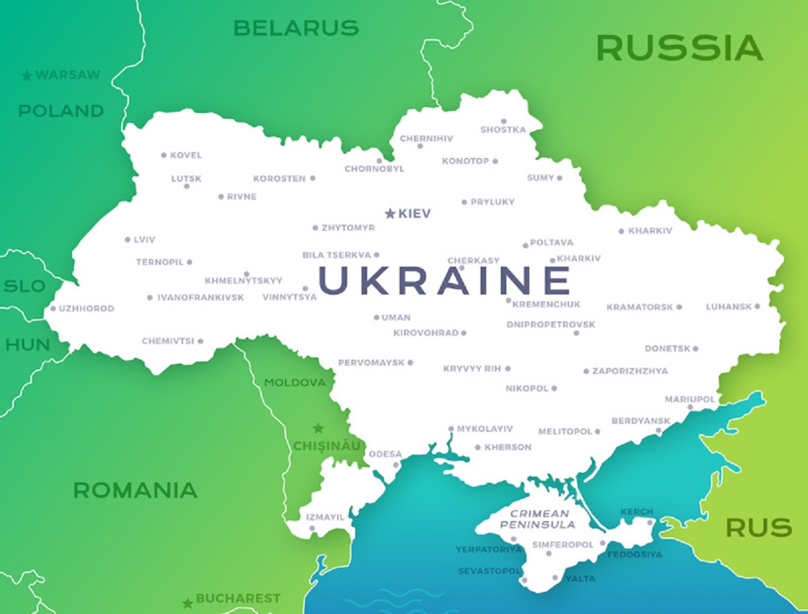

Україна
Назва
Русь
Найдавніша відома згадка слова «Русь» як географічної назви має місце у візантійсько-руському договорі 911 року, де вона використана на позначення держави і території підвладної київському князю Олегу (що на той час обмежувалося переважно околицями Києва). В подальшому назва «Русь» використовувалася на позначення земель, на які поширювалася влада київських князів, у вузькому значенні лише щодо Середнього Придніпров'я (Київське, Чернігівське, Переяславське князівства), у ширшому на значну частину Східної Європи, при цьому землі за межами Наддніпрянщини в низці джерел означалися як «Зовнішня Русь». Одночасно у Візантії на означення Русі використовувалося, серед інших назв, еллінізоване слово «Росія» («Ρωσία»). Після занепаду Русі внаслідок монгольської навали, у XIII-XIV століттях назву «Королівство Русь» певний час носила Галицько-Волинська держава, протягом 1398—1569 років слово «Русь» використовувалося в повній назві Литовської держави і протягом 1434–1772 років назву «Руське воєводство» носила Галичина у складі Королівства Польського та Речі Посполитої. Московія не претендувала прямо на загальний спадок Русі та не використовувала це слово у назві своєї держави доки Іван IV у 1547 році не почав називати себе, серед інших титулів, «царь и великий князь всеа Русии», після чого до Московії в деяких документах, окрім як «Московське царство», почали застосовуватися також назви «Російське царство» або «Росія». Закріпив цю назву за Московією Петро I, отримавши контроль над лівобережною Гетьманщиною та Києвом і перейменувавши Московське царство на Російську імперію у 1721 році. До цих подій київські та московські землі не перебували у складі однієї держави протягом близько 500 років у XIII-XVIII століттях. Низка істориків згодом характеризували таке запозичення як безпідставне привласнення Московією назви та історії України-Русі. Серед тих, хто відстоював правомірність використання назви «Русь» лише стосовно України, але не Росії-Московії, був анонімний автор впливової праці початку XIX століття «Історія Русів». Згодом аналогічну позицію детально обґрунтував Михайло Грушевський, зокрема зазначаючи, що «ми є народ у якого вкрали назву», на підкреслення чого назвав свою найбільшу працю «Історія України-Руси». Поділяє таку думку й багато сучасних дослідників.
Україна
Слов'янське слово «Україна» вперше згадується в Київському літописному зводі за Іпатіївським списком під 1187 роком. Ним окреслювали терени Переяславського князівства, що входило до історичного ядра Русі поруч із Київським і Чернігівським князівствами. Це слово також зустрічається в руських літописах під 1189, 1213, 1280 і 1282 роками, позначаючи Галичину, Західну Волинь, Холмщину й Підляшшя. У литовських і польських хроніках та офіційних документах XIV—XVII століття «Україною» в широкому значенні називали руські землі Галичини, Волині, Київщини, Поділля й Брацлавщини, а у вузькому — територію Середнього Подніпров'я. Таке ж двояке значення цього слова зберігалося й із середини XVII століття, після постання руської держави Війська Запорозького.
У зв'язку з входженням частини земель Русі до складу Московського царства, а згодом і Російської імперії, слово «Україна» закріпилося за регіоном Подніпров'я; ним також позначали Слобожанщину. Після перейменування Московського царства на Російську імперію 1721 року, українські землі почали називати «Малоросією». У другій половині XIX століття — початку XX століття, під впливом національного руху руської інтелігенції, назва «Україна» набирала значення руської етнічної території, а сам етнонім «русини» був витіснений етнонімом «українці». 1917 року була проголошена перша держава, яка використала слово «Україна» у своїй офіційній назві, — Українська Народна Республіка.
Етимологія слова «Україна» достеменно не відома. Згідно з теорією, якої дотримуються більшість українських дослідників, українських дослідників, «Україна» походить від слів «країна» чи «край», тобто «у» означає «рідний», «свій». українських дослідників, Таким чином «україна» — антонім слова «чужина». Згідно однієї з інших теорій, що утворилася під впливом польської та російської історіографії, воно означає «околицю» (рос. окраину) чи «прикордоння».
Географія та природа
Розташування
Україна розташована в південно-східній частині Європи. Вона має спільні сухопутні державні кордони з Білоруссю на півночі, з Польщею на заході, зі Словаччиною, Угорщиною, Румунією і Молдовою на південному заході й із Росією на сході. Південь України омивається Чорним та Азовським морями. Морські кордони вона має з Румунією і Росією.
Загальна площа України становить 603 700 км², вона становить 5,7 % території Європи й 0,44 % території світу. За цим показником вона є другою за величиною серед країн Європи після Росії (або найбільшою країною, яка повністю лежить у Європі). Площа виключної морської економічної зони України становить 72 658 км². Код країни за системою ISO 3166-1-alpha-2 — UA. Територія України витягнута із заходу на схід на 1316 км і з півночі на південь на 893 км, лежить приблизно між 52° 20′ та 44° 23′ північної широти й 22° 5′ і 41° 15′ східної довготи.
- Крайній північний пункт — село Грем'яч (урочище Петрівське) Чернігівської області.
- Крайній південний пункт — смт Форос Автономної Республіки Крим.
- Крайній західний пункт — село Соломоново Закарпатської області.
- Крайній східний пункт — село Рання Зоря Луганської області.
- Географічний центр України розташований на північній околиці села Мар'янівка Звенигородського району Черкаської області.
- Згідно з однією з методик вимірювання, географічний центр Європи розташований на території України, неподалік міста Рахів Закарпатської області.
Найбільшими чорноморськими портами є Одеса, Чорноморськ, Херсон, Севастополь, азовськими — Маріуполь, Бердянськ, Керч.
Загальна протяжність кордонів 6993 км, із них сухопутних 5638 км. Довжина морської ділянки кордону: 1355 км (Чорним морем — 1056,5 км; Азовським морем — 249,5 км; Керченською протокою — 49 км).
Заповідні території
В Україні всі природоохоронні території об'єднані у Природно-заповідний фонд України, який включає понад 8600 об'єктів, що становлять близько 6,8 % площі країни.
Природно-заповідний фонд України включає території або акваторії, що мають особливу природоохоронну, наукову, естетичну, рекреаційну та іншу цінність і виділені з метою збереження природної різноманітності ландшафтів, генофонду тваринного і рослинного світу, підтримання загального екологічного балансу та забезпечення фонового моніторингу навколишнього природного середовища. Об'єкти природно-заповідного фонду охороняються законодавством України як національне надбання з встановленням особливих режимів охорони.
Природні об'єкти Природно-заповідного фонду України розділяються на біосферні заповідники, природні заповідники, національні природні парки, регіональні ландшафтні парки, заказники різних типів, пам'ятки природи та заповідні урочища. Найвищий статус і здебільшого найбільшу площу мають заповідники та національні природні парки. В Україні існує 5 біосферних заповідників (Асканія-Нова, Карпатський, Чорноморський, Дунайський, Чорнобильський), 19 природних заповідників (найдавніші Канівський, Кримський, Український степовий, Поліський, Луганський, Мис Мартьян, Ялтинський гірсько-лісовий, Карадазький) та 55 національних природних парків (найдавніші Карпатський, Шацький, Синевир).